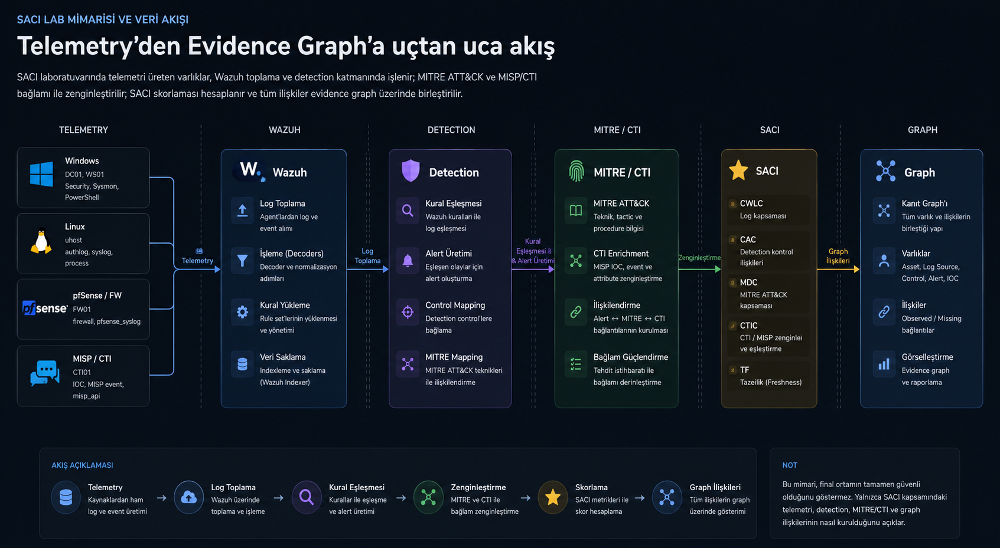

BULGULAR
SACI bulgular özeti
Bu sayfa SACI modelinin final nicel sonuçlarını, kanıt graph'ı kapanışını, MITRE/CTI kapsamını ve senaryo tabanlı doğrulama bulgularını bir araya getirir.
Yayına esas final veri kümesi ile S0–S18 tarihsel doğrulama serisi ayrı yorumlanır. Figürler SVG biçiminde dışa aktarılabilir ve makaleye uyarlanabilir.
Bulgular yükleniyor...
Final sonuçlar
Yayına esas final kanıt paketinden türetilen temel göstergeler.
Yorumlama sınırı: SACI=100, beyan edilen görünürlük ilişkilerinin kapandığını gösterir. Mutlak güvenlik garantisi değildir.
Senaryo görünümü
Final veri kümesi ile manifestte bulunan tüm S0–S18 doğrulama senaryolarını tek tek inceleyin.
FINAL
Final görünürlük kapanışı
Graph özeti
Birincil etki
Akademik yorum
Senaryo bileşen profili
Seçilen veri kümesinin aktif SACI bileşenleri.
Sistem ve kanıt yapısı
Skorlama modelini destekleyen mimari ve final graph düzeyindeki sonuçlar.
Laboratuvar mimarisi ve kanıt akışı
Telemetri, Wazuh, detection, MITRE/CTI, SACI ve graph çıktı katmanları.

Final SACI bileşen profili
Aktif görünürlük boyutlarının normalize edilmiş skorları.
Kanıt graph'ı kapanışı
Final kanıt graph'ındaki observed ve missing ilişkiler.
MITRE ve CTI kapsamı
ATT&CK teknik kapsamı ve aşamalı CTI/MISP kapanışı.
Senaryo tabanlı doğrulama
Skor değişimi, missing ilişki kapanışı, kritiklik duyarlılığı, CTI davranışı, freshness düşüşü ve aktif kapsam normalizasyonunu gösteren figürler.
S0–S18 SACI değişimi
Skorun aşamalı görünürlük iyileştirmelerine ve kontrollü bozulmalara duyarlılığı.
Missing ilişki değişimi
Kontrollü doğrulama serisinde eksik kanıt ilişkilerinin azalması ve yeniden ortaya çıkması.
Kritiklik duyarlılığı
S7A kritik DC01 Sysmon kaybı ile S7B kritik olmayan WS01 Sysmon kaybının karşılaştırılması.
CTI aşamalarının davranışı
Enrichment etkinleştirme, açık CTI zinciri ve no-hit lookup sonuçlarının karşılaştırılması.
Freshness düşüşü ve toparlanma
S15 freshness düşüşünün S17 düzeltme sonrası toparlanma ile karşılaştırılması.
Aktif kapsam normalizasyonu
S18 senaryosunda aktif değerlendirme kapsamı dışındaki legacy kontrolün ele alınması.
Yorum ve sınırlılıklar
Final ve senaryo tabanlı sonuçların akademik yorumu.